Scene view UI
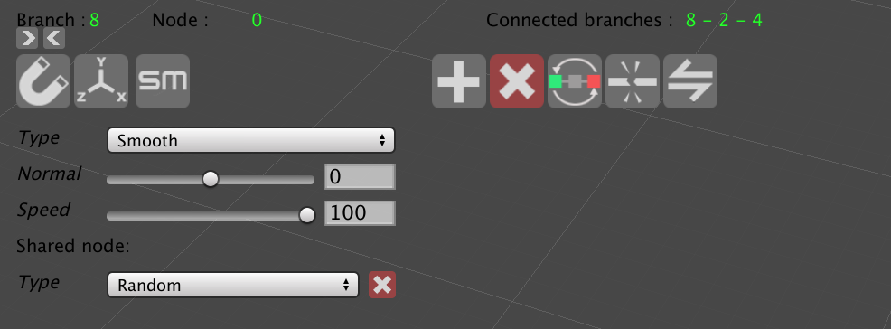
Debuging Area
Used to display the data you are currently selecting
| Variables | Description |
|---|---|
| Branch | The selected branch key (integer) in the branches dictionary |
| 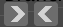 | Used to change branches selection , this can be very useful when a branch is unselectable in your scene view ( branch has only one node) |
| Node | The selected node index in the nodes list of the selected branch |
| Connected branches | The branches keys connected to the selected shared node in case one is selected, if not then null is shown |
Spline Editing Area
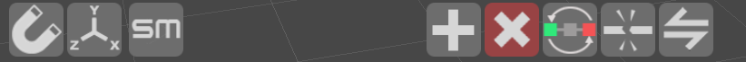
| Buttons | Description |
|---|---|
| 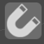 | Snap all nodes and their handles to Unity grid |
| 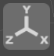 | Turn pivot editing mode On, once clicked the icon turns to green then you can move spline plus game object pivot freely without affecting the nodes transforms, once you’re happy with your new pivot transform click again on the button to save changes and turn pivot editing mode to Off, |
| Smooth regular and shared nodes, once this button is clicked you get a message box to control your smooth radius, 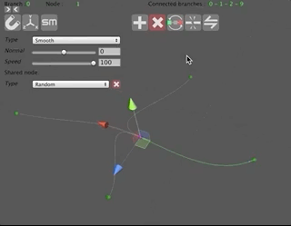 | |
 |
Add a new branch, you need to have a node selected before clicking on the add branch button, the selected node will be considered as the origin of the newly created branch. 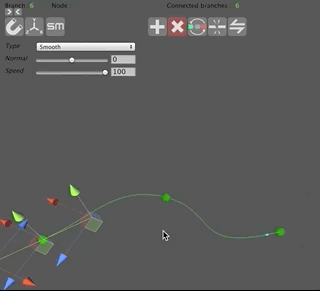 |
| Delete the selected branch. | |
| 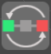 | this flips the handles position of the selected node , this is very useful when drawing your spline ,it helps you get the desirable spline shape you want the blue arrow indicates the start of the selected branch 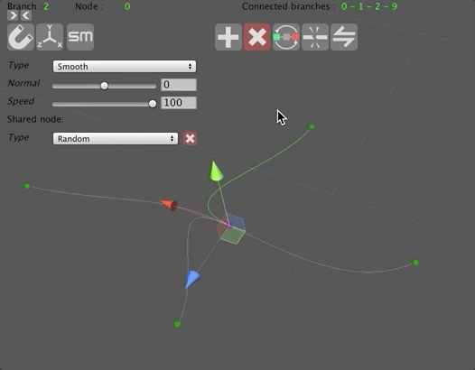 |
| 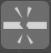 | this is used to break a branch at the selected node. 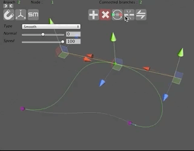 |
| Reverse button is used to reverse the direction of the branch selected,the blue arrow indicates the start of the selected branch 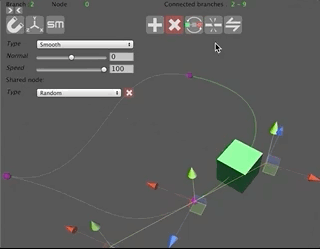 |
Selected Node Area
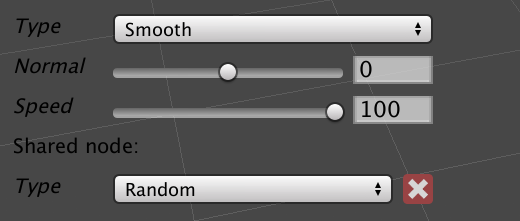
| Variables | Description |
|---|---|
| Type | The selected node type, Free ,Smooth, broken |
| Normal | The selected node normal value, 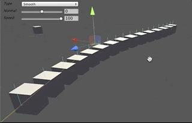 the value is set to zero by default, it varies from -180 to 180To visualize the normals of the spline plus object you have to enable “Helpers” which can be found under Tools=>Spline plus=>General settings ,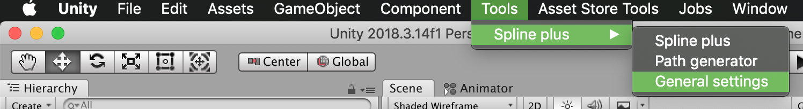 |
| Speed | This will allow you to control speed value of the selected node The speed variation [0,100] is represented by a spline color variation, red color means that the speed is minimum at that position, if color is green or gray then speed is maximum 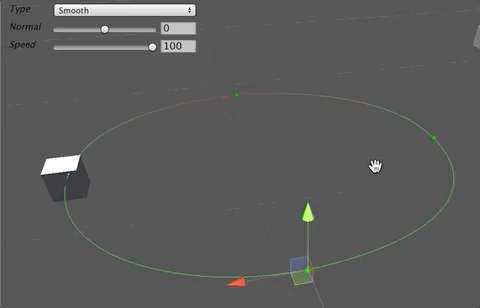 |
| Shared node type | There are 2 types of shared nodes in Spline plus, Random: represented with a purple sphere, it is used when you want your followers to randomly pick a branch at that shared node, Info: The random branch picking selection will be done between branches 4,3,5 for the example below, but branches 4 and 5 are going to be excluded because of the wrong curvature they have, so the only choice left is 3 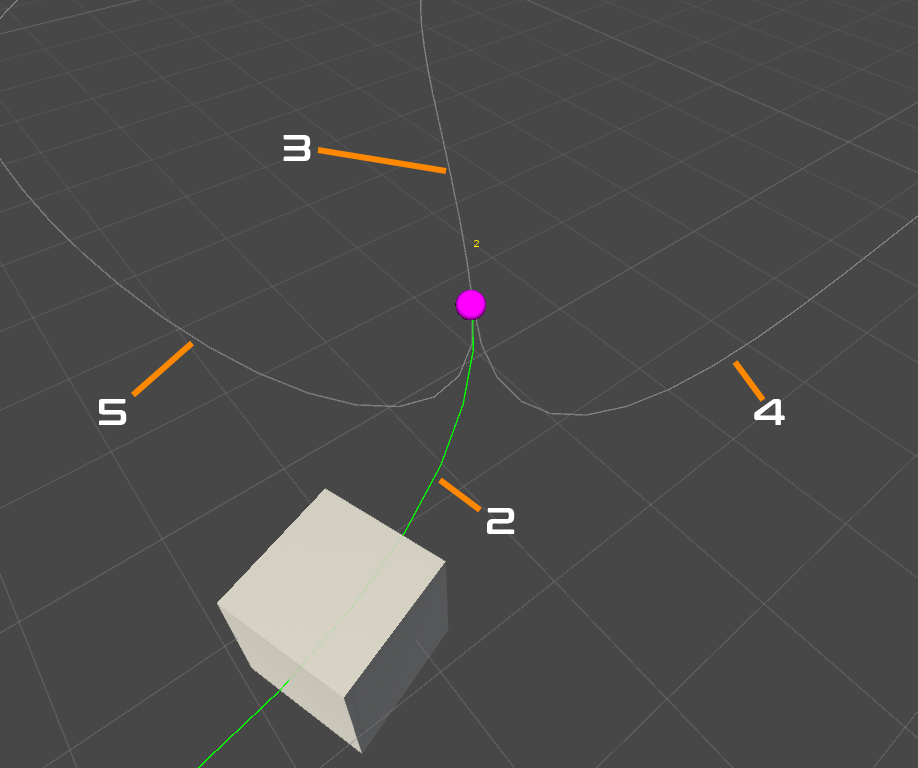 In this new example below the random branches picking is going to be done between branches 5,3,4. All branches curvatures are normal in this new case, so all the options are going to be taken into consideration. 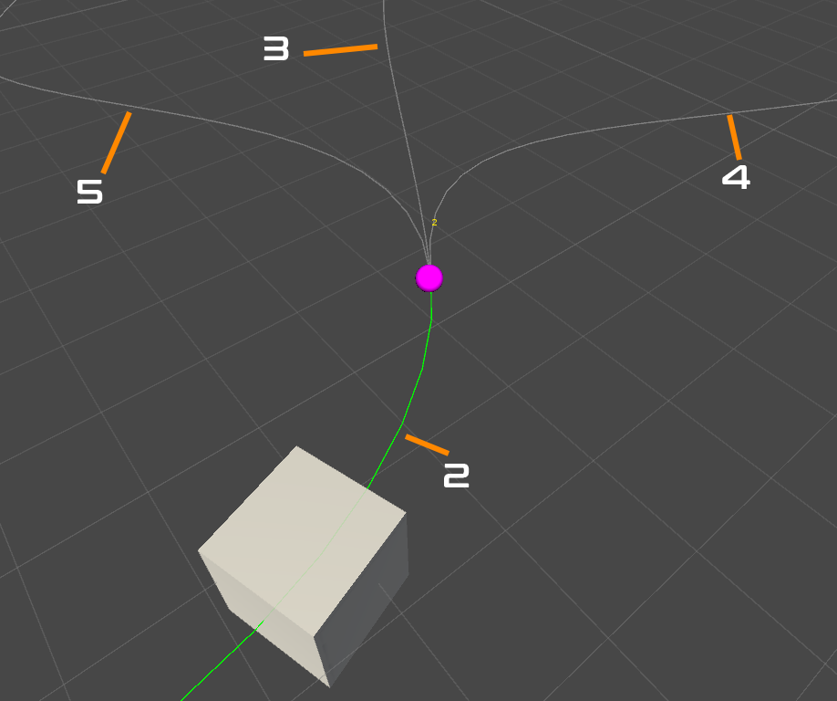 Defined: represented with a Blue sphere, this is used to predefine the branch you want your followers to take when it reaches a shared node,You have 4 branches to setup, Left , Right, Forward and backward 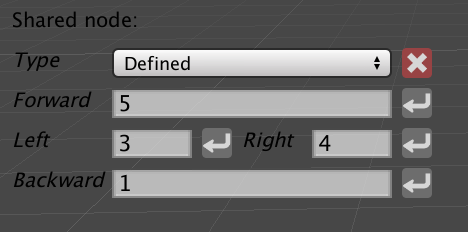 Ps: to add a branch index, you need to first select the branch from the scene view then click on  , the branch key will be inserted automatically into the text box. , the branch key will be inserted automatically into the text box. |